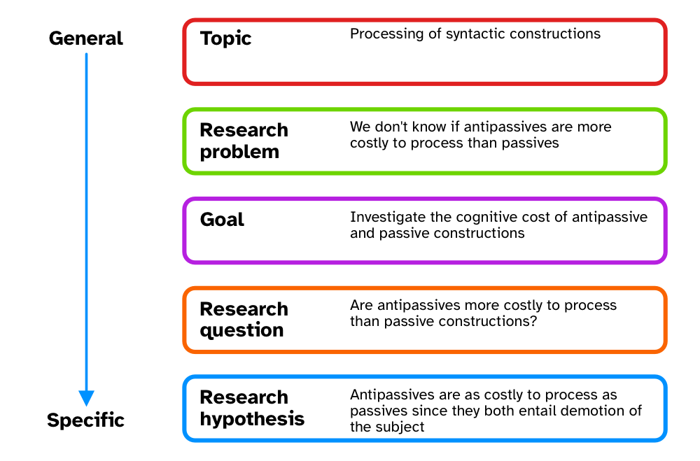

40 A workflow for quantitative studies
This chapter is an overview of a workflow we suggest researchers follow while planning and executing quantitative studies. Note that the proposed workflow also includes concepts and procedures that have not been treated in the textbook. In such cases, references to relevant resources are provided. The workflow assumes a Bayesian inference approach. We also recommend Gelman et al. (2020) and Schad et al. (2021) as complementing approaches.
40.1 Define your research questions/hypotheses

In Chapter 2, we introduced the research context framework proposed by Ellis and Levy (2008). The framework is an aid to defining the object of study, from a more general perspective (the topic) down to a specific research question and hypothesis. This step normally takes up a large chunk of research time, since this is when researchers spend time reading and synthesising relevant literature. At the end of this stage, you should have precise and testable research questions and, if appropriate, research hypotheses. This includes carefully thinking about the definition of the words and concepts in the RQs/RHs (Morin 2015; Flake and Fried 2020; for a realistic-positivistic view, see Devezer et al. 2019, 2021), what your population is, and how your positionality informs all this (Jafar 2018; Darwin Holmes 2020; Castanelli 2024).
40.2 Build a causal graph
Correlation is not causation, but it is if one adopts a Causal Inference approach (Section 39.3). Most quantitative research, while not mecessarily framed in causal terms, is ultimately about causality (McElreath 2020). Statistical model are often used as a substitute to proper causal thinking: this approach can however lead to biased estimates (Arif and MacNeil 2022; Lewer et al. 2025). Directed Acyclic Graphs (DAGs) are a formalised way of visually laying out causal relationships between variables. DAGs can be used to inform statistical modelling in a principled way, by allowing researchers to identify necessary outcome and predictors variables that should be included in the model. A useful tool for the development of DAGs is DAGitty, available at https://www.dagitty.net. This online software allows you to input variables and link them based on causality. The software also provides you with so-called “adjustment sets” based on the specified DAG: adjustment sets are sets of variables that should be included as predictors in a regression model to estimate specified direct causal effects. As mentioned in Section 39.3, to learn about Causal Inference and Directed Acyclic Graphs, see McElreath (2020) Ch 5-6 (and subsequent) and the YouTube video-lectures: https://www.youtube.com/playlist?list=PLDcUM9US4XdPz-KxHM4XHt7uUVGWWVSus.
40.3 Simulation, prior specification and model checks
Once you have clearly defined RQs/RHs and have built a DAG, you should simulate data based on the implied generative process (the real-world process that you think produces the target behaviour being investigated) and check that the specified statistical model correctly recovers the parameter values used in simulating data. Model checks require that you first specify prior probability distributions for each parameter in the statistical model. Priors should be defined based on previous studies and/or expert knowledge (see Section 39.4 for relevant references). Prior predictive checks involve assessing whether the defined priors produce data whose joint posterior distribution is qualitatively similar to the expected distribution based on prior studies and expert knowledge. This usually requires iterating over several steps of setting priors and checking the resulting joint posterior, refining priors if necessary and checking the joint posterior again, and so on.
Once the resercher is satisfied with the prior predictive checks, then they can use the chosen priors in the chosen regression model to check that the model works as expected. “Working as expected” means two things: first, the model should run and converge without issues from a purely computational perspective; second, the model should correctly recover the parameters values used in the data simulation. Non-converging models might require adjustments in prior or model structure specification. Models that do not recover the original parameter values used in the data simulation should be adjusted until they do.
40.4 Sample size estimation
Estimating the sample size necessary to reach the desired precision in the estimates of interests (these are determined by the DAG) is not necessarily a separate step than the data simulation and model checks from the previous section, but it is worth mentioning it separately. Data simulation can be used for this purpose. See Section 39.7 for an overview of approaches. The outcome of the procedure is an estimate of how much data you need to collect to reach the desired precision.
40.5 Registered Reports or pre-registration
At this point, you have two options: you can preregister your study design and analysis plan or you can proceed with writing a Stage 1 manuscript and go the Registered Report route (see Chapter 33). You will have to consider sharing and licensing the research compendium (at the current stage and especially at study completion).
If you are just preregistering the study, you can start data collection after the registration. If you went the RR route, you need to wait for In Principle Acceptance. The following steps will imply either of these events have taken place and that you completed data collection.
40.6 Run your planned analysis
You now run your planned (registered) analysis. Exploratory (non-registered analyses) are allowed, provided they are flagged as such in your manuscript.
40.7 Model diagnostics, posterior predictive checks and prior sensitivity analysis
At this point, you should check the model diagnostics, run posterior predictive checks (for example, with pp_check()) and a prior sensitivity analysis to determine the goodness of fit of the model. A principled way to run a prior sensitivity analysis is described in Betancourt (2018) and Schad et al. (2021).
40.8 Interpret the results
The results can now be interpret based on the RQs/RHs. The key concept at this stage is “epistemic humility”: interpretation should be commensurate to the degree of precision obtained and the strength of the evidence (mainly based on precision, but for alternatives see Gelman et al. (2020) and Schad et al. (2021)). If you are following an RR route, you would write your Stage 2 manuscript and submit it for stage 2 review.
40.9 The cycle begins again
Your study is completed and published. Most often than not, the results open up other venues for investigation and follow-up studies can be developed. The research cycle begins once again.